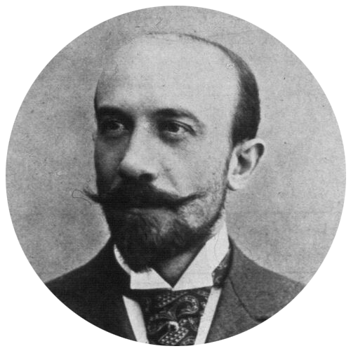

Biografia
Para uma biografia exaustiva baseada em várias histórias do cinema e vários arquivos: periódicos da Bibliothèque nationale de France e da biblioteca do Arsenal, coleções da Revue de la Prestidigitation, Illusionniste, Industriel forain e Figaro, arquivos familiares (sem esquecer a tradição oral), leia Georges Méliès l'enchanteur escrito por Madeleine Malthête-Méliès, publicado pela La Tour Verte em novembro de 2011.
- 1861 – Nasce Georges Méliès em Paris, 3º arrondissement, em 8 de dezembro. Seu pai era um rico fabricante de sapatos, sua fábrica estava localizada perto da Porte Saint Martin. Sua mãe é filha do sapateiro da Rainha da Holanda.
- 1880 – Durante seus estudos no Lycée Louis le Grand, em Paris, mostra certos dotes para o desenho e a pintura. Obteve seu bacharelado em 1880 e ingressou nos negócios da família após completar o serviço militar.
- 1884 – Enviado para Londres por seu pai para se formar em vendas e aprender inglês, ele aproveitou para se tornar um ilusionista frequentando um teatro de magia muito famoso. Ele constrói relacionamentos entre artistas e profissionais do espetáculo.
- 1885 – Casa-se com Eugénie Génin, uma rica herdeira com quem terá dois filhos.
- 1886 – Atua como ilusionista no Musée Grévin e na Galerie Vivienne sob o pseudônimo de Doutor Mélius.
- 1888 – Nascimento de sua filha Georgette, que mais tarde o ajudou como operador de cinema e depois diretor de teatro. Graças à doação feita a ele por seu pai, ele assumiu o arrendamento e o fundo do teatro mágico Robert-Houdin em julho e assumiu sua administração. Este pequeno teatro está localizado na 8 boulevard des Italiens. A doação também inclui uma propriedade em Montreuil sous bois, perto de Paris.
- 1889-1890 – Ao criar ou modernizar espetáculos de mágica em seu teatro, produziu caricaturas políticas em um jornal fundado por seu primo Adolphe Méliès. Este semanário, La Griffe, dirigido contra o general Boulanger que preparava um golpe de estado na França, desapareceu após o fracasso deste último.
- 1891 – Fundou a Academia de Invocação do Mal, que dava status aos ilusionistas, antes considerados pelas autoridades como nômades ou mascates.
- 1895 – Os irmãos Lumière, inventores do Cinematógrafo, fazem sua primeira apresentação pública em 28 de dezembro no Grand Café, próximo ao teatro Robert-Houdin. Georges Méliès foi convidado pelo pai, Antoine Lumière, um fotógrafo que ele conhecia bem.
- 1896 – Apropria-se desta invenção científica com a intenção de completar os espetáculos de ilusão teatral de Robert Houdin. Tendo feito sua própria câmera, a Kinetograph, fez suas primeiras filmagens em abril. Uma primeira versão (serão 17) de sua marca Star Film, a estrela negra, está registrada [1].
- Seu primeiro longa-metragem (por paralisação de câmera) Escamotage d'une dame chez Robert-Houdin foi produzido naquele ano. Ao longo dos anos, ele inventaria todos os truques de cinema agora chamados de "efeitos especiais".
- 1897 – De acordo com os seus próprios planos, mandou construir o Atelier A na horta da sua propriedade em Montreuil-sous-Bois: foi o primeiro estúdio do mundo inteiramente dedicado ao cinema com todo o equipamento necessário.
- 1899 – Apresenta, em “Reconstituted Actuality”, uma série de 11 visões politicamente comprometidas sobre o caso Dreyfus. Ele interpreta o papel de um dos advogados do capitão Dreyfus, Mestre Labori.
- 1901 – Nascimento do filho André que aparecerá como Georgette em vários filmes de Méliès e que fará carreira na ópera, opereta e cinema. Ele interpretará seu pai em Le Grand Méliès , um filme de Georges Franju.
- 1902 – O filme Journey to the Moon é um sucesso mundial e é amplamente pirateado nos Estados Unidos. Georges Méliès enviou seu irmão Gaston para lá para defender seus interesses e ganhar uma posição no mercado americano. Mais tarde, Gaston fará seus próprios filmes.
- 1904 – Georges Méliès fundou a Chambre Syndicale de la prestidigitation, da qual foi presidente até sua morte.
- 1907 – Um ano antes da criação do “Film d'Art” na França, publica um texto fundamental que eleva o cinematógrafo (na época essencialmente feirante) à categoria de arte, no qual expõe sua concepção estética e sua praticar visualizações animadas. Este texto de 30 páginas, ilustrado com fotografias, aparece no Diretório Geral e Internacional de Fotografia.
- 1907-1908 – Admitido em 1907 no primeiro cartel montado por Edison para controlar a produção americana, que se tornou uma indústria, foi obrigado a aumentar sua produção. Durante o inverno de 1907-1908, mandou construir a oficina B (segundo estúdio) para este fim, de modo a poder rodar dois filmes em paralelo.
- 1909 – Preside o congresso internacional de editores cinematográficos realizado em Paris.
- 1912 – Filma seu último filme Le Voyage de la famille Bourrichon . Entre 1896 e 1912 fez 520 filmes dos quais foi produtor, distribuidor, roteirista, decorador, diretor, ator principal. Seus últimos filmes não tiveram o sucesso esperado diante da concorrência de jovens cineastas e sua modernidade. Sem nunca ter criado uma empresa, sempre investiu recursos próprios e sua situação financeira tornou-se crítica.
- 1913 – Com a morte da esposa, fecha definitivamente seus dois ateliês. A distribuição de seus filmes nos Estados Unidos, bem como os feitos por seu irmão Gaston, lhe garantirão renda enquanto o teatro Robert-Houdin, como todos os cinemas, fechará em 1914 por causa da guerra.
- 1917-1922 – Transforma o Atelier B (segundo estúdio) que passa a ser o teatro de Variedades artísticas, dirigido por sua filha Georgette. Ele interpretará mais de cem papéis diversos lá na companhia de seu filho e sua filha, além de outros atores e artistas líricos.
- 1923 – Arruinado, mas não falido, Georges Méliès deixa sua propriedade em Montreuil, que é vendida para pagar suas dívidas. No mesmo ano, o teatro Robert-Houdin, que continuou a dirigir até o início da Primeira Guerra Mundial, foi demolido após uma expropriação para ampliar o Boulevard Haussmann.
- 1925 – Georges Méliès se casa novamente com Jehanne d'Alcy (viúva Sra. Manieux), um de seus ex-artistas do teatro Robert-Houdin e depois do cinematógrafo. Ela agora é gerente de uma loja de brinquedos e confeitaria no hall da estação de Montparnasse. É lá que, depois de um longo período de esquecimento, os jornalistas o descobrirão vendendo brinquedos.
- 1929 – Georges Méliès é homenageado durante uma gala organizada em dezembro na Salle Pleyel, em Paris.
- 1931 – Louis Lumière dá-lhe a cruz da Legião de Honra.
- 1932 – Com a França passando por uma grave crise econômica, a loja de brinquedos deixa de ser lucrativa. Georges Méliès, sua esposa e sua neta Madeleine são recebidos no Château d'Orly, propriedade da Mutuelle du Cinéma.
- 1938 – Em 21 de janeiro, Georges Méliès morre em Paris.
Observação
[1] Ao contrário do que você pode ler aqui ou ali, a Star Film não é uma empresa, mas uma marca registrada. Georges Méliès não montou uma empresa, ele produziu suas vistas animadas com seu capital pessoal.